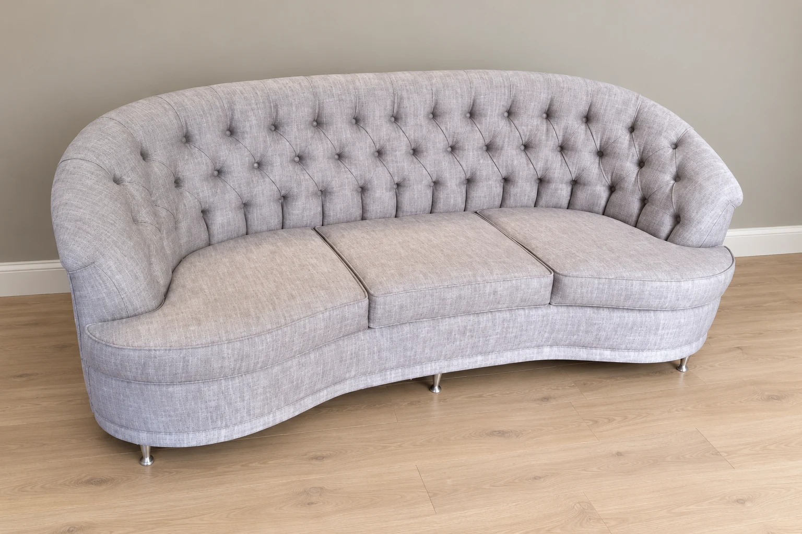

Ambientação com IAVer original
Sofá curvo capitonê
Encosto envolvente e três assentos.
Fabricação e reforma de estofados em Goiânia
Um sofá novo, uma reforma ou uma medida que precisa ser sua. Na SM, a conversa começa com o espaço e com o estofado que você imagina.

Ambientação com IAVer original
Dos encostos soltos ao capitonê, veja estofados publicados pela SM. Cada consulta pode começar por uma peça, uma medida ou uma ideia de reforma.
Ambientação com IAVer original
Encosto envolvente e três assentos.
Encostos acolchoados e braços baixos.
Encostos bitonados e um assento estendido.
Almofadas soltas e composição em L.
Módulos em L e revestimento verde-escuro.
Assentos cinza e almofadas estampadas.
Assento e encosto em tom claro.
Assento estendido e almofadas estampadas.
Nas imagens com ambientação, o cenário foi criado com IA. O registro usado como referência fica em “Ver original”. Esta seleção reúne publicações da loja. Confirme medidas, configurações e disponibilidade na conversa.
A SM trabalha com fabricação e reforma de estofados, inclusive sob encomenda. A referência ajuda a começar; as medidas e o uso da sua casa ajudam a continuar.
Conte o tipo de sofá, o formato do ambiente e o tamanho que você precisa. Consulte as possibilidades para o seu projeto.
Separe fotos do seu estofado, diga o que deseja mudar e peça uma avaliação da estrutura e do revestimento.
Conte o que você imagina, inclua as medidas e revise a mensagem antes de abrir o WhatsApp da SM.
Av. Gercina Borges TeixeiraDiga o que você deseja mudar e tenha fotos atuais do estofado para apresentar na conversa. A SM pode avaliar o serviço e orientar sobre materiais e medidas.
A SM divulga fabricação sob encomenda. Escolha uma referência e informe o espaço disponível para conversar sobre formato, tecido e orçamento.